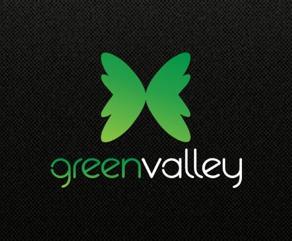

|  | Barangay Dontogan |
 |
 |
 |
 |
|---|
Cultural Heritage
Vision
Dontogan Barangay as it continue to progress and develop envisage itself to be an efficient governance and responsible leadership, working hand in hand with praticipative residents in conserving a sustainable community.
Mission
To promote general welfare and provide exceptional publice service.
History
Nestled at the panoramic and famous Mount Sto. Tomas, Baguio City's highest summit at 5,000 Feet above sea level-is a community of people who adapted to their environment and to the demands of a ever-changing world keeping alive their own values and traditions from mixed cultures and heritages. Barangay Dontogan, as it is known, was once a component part of a larger district collectively known as Sto. Tomas. It was in 1963 that the Barrio Council saw the need to establish a separate district from Sto. Tomas in acknowledgement of the new reality a growing neighborhood district from the other communities. Their act have birth to what is today Barangay or "Shontog" for which in Ibaloi means "mountain". Dontogan then would refer to a mountainous place.
Dontogan was not the original name. It was named by the Cordillera city of Baguio. This land is in Shuyo, Wetig, Tuba Central, Benguet Luzon. It was surveyed by Ikang Paus in 1914, and in 1917 an American Original Certificate Title 13 was issued and was registered in the City of Baguio at the same year. It comprises 3 parcels of land. Lot 1 56.92 hectares owned now by Basil Family; Lot 2 34.37 hectares and Lot 3 10.15 hectares more or less. A total of 101.81 hectares.
LifeStyle
Lifestyle consists of a combination of special topics not covered in the other areas, such as cooking, martial arts, traditions, superstitions and even stereotypes.
Indigenous people
A big bulk of the Cordillera population is composed of closely-related indigenous peoples. Collectively, our peoples are popularly known as Igorot. Often we are also grouped into a number of ethnic or ethno-linguistic identities, such as Apayao or Isneg, Tinggian, Kalinga, Bontoc, Kankanaey, Ibaloy, Ifugao, and Bago.
Language
The main language spoken is Ilocano, but other languages include English and tagalog.
Education
Art is also very popular in Baguio with a combination of weaving, painting and sculpture that draws many tourists as well as artists to the annual Baguio Arts Festival.